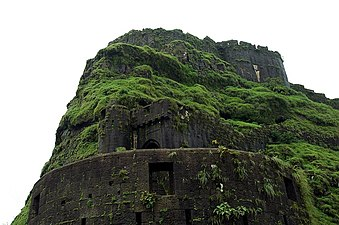
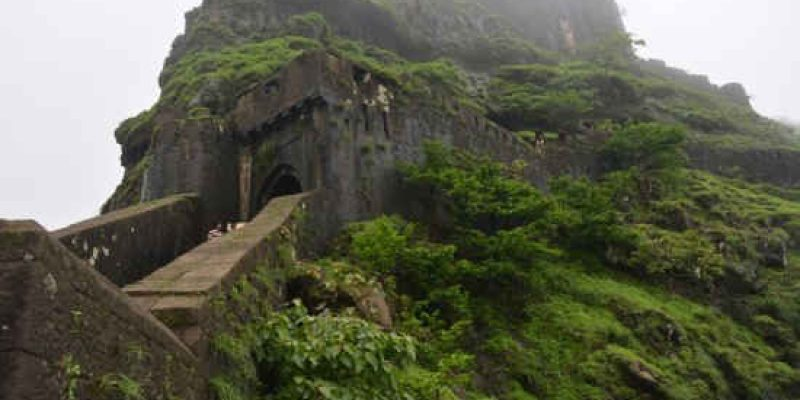

.webp)
|
|
 |  |
Lohagad ("Iron Fort") is one of the many hill forts of Maharashtra state in India. Situated close to the hill station Lonavala and 52 km (32 mi) northwest of Pune, Lohagad rises to an elevation of 1,033 m (3,389 ft) above sea level. The fort is connected to the neighboring Visapur fort by a small range. The fort was under the Maratha empire for the majority of the time, with a short period of 5 years under the Mughal empire.
Lohagad has a long history with several dynasties occupying it at different periods of time: Satavahanas, Chalukyas, Rashtrakutas, Yadavas, Bahamanis, Nizams, Mughals and Marathas. Shivaji Maharaj captured it in 1648 AD, but he was forced to surrender it to the Mughals in 1665 AD by the Treaty of Purandar. Shivaji Maharaj recaptured the fort in 1670 AD and used it for keeping his treasury. This fort was used to keep the loot from Surat. Later in Peshwa time Nana Phadnavis used this fort for living for some time and built several structures in the fort such as a big tank and a step-well. The lohagad fort also has caves on its south side facing Lohgadwadi. In September 2019 an inscription in Brahmi script in Prakrit language dating back to the 2nd or 1st century BC was discovered by team of trekkers from Pune (Vivek Kale, Saiprakash Belsare, Abhinav Kurkute, Amey Joshi, Ninad Bartakke and Ajay Dhamdhere)[1] in the cave on the cliff. The inscription was studied by Dr.Shreekant Pradhan (an ancient Indian paintings scholar working at Deccan College Post Graduate and Research Institute),Abhinav kurkute and Vivek Kale [2] [3] The inscription was found on the outside wall of a rock-cut cave on the eastern side cliff of the Lohgad fort, close to Lohgadwadi village. The inscription is written in the Brahmi script and the language is Prakrit influenced Sanskrit. The inscription is similar to, but more descriptive than, an inscription discovered at Pale caves (Maval)by Mr. R.L.Bhide and studied by archaeologists HD Sankalia and Shobhana Gokhale in 1969. It starts with ‘Namo Arihantanam’ which is commonly used by Jains, pointing to the fact that the Lohgad cave is a Jain rock-cut cave. The inscription at Pale caves also begins in a similar manner and based on Sankalia and Gokhale’s study, it was assumed to be a Jain inscription. The inscription mentions the name "Ida Rakhita", meaning Indra Rakshita, who donated water cisterns, rock-cut benches to settlements in the area. The inscription at Pale also mentions the same name. The newly discovered inscription is 50c m-wide and 40cm-long and is written in six lines. The Lohagad Jain cave is near the fort. The fort has been declared as a protected monument by the government.
Lohagad is part of the Western Ghats. It rises to an elevation of 1,033 m (3,389 ft) above sea level, and is located to the southwest of the larger Visapur fort. The range divides the basins of the Indrayani river and Pavana lake. Lohagad overlooks the Pavana reservoir, located to the south of the mountain. The hill extends to the northwest to a fortified spur, called Vinchukada (Scorpion's tail) because of its resembling shape. The four large gates of Lohagad are still in good condition and reasonably intact. During the monsoon, the top of the fort is covered with mist and clouds and becomes particularly wet with growing moss. The roads and trails leading to the hill are quite slippery at this time of the year and precautions are necessary to be taken while venturing the routes.
Lohagad fort can be accessed by various modes of travel. The nearest airport is the Pune International Airport. The proposed Navi Mumbai International Airport will serve as the nearest airport in the coming future. The nearest train station is Malavli, which can be accessed by suburban trains between Lonavala and Pune. The nearest major train station is Lonavala, on the Mumbai-Pune railway line. Lohagad is connected by the Mumbai-Pune Highway and can also be accessed from Paud via Kolvan and Dudhiware Khind for all vehicles. People can also hike all the way to the fort. Bhaja Caves is on the way to Lohagad if a small diversion is taken. This walk is a particular favorite of trekkers, especially in the monsoon season. It is a simple, very scenic and pleasant trek and the distance from Malavli and Lohagad can be covered in around two hours. A tar road exists all the way to the top from Malavli station and one can hire a tempo or cab to the top. The best season to visit the fort is in the monsoons. It is absolutely safe and many vendors selling onion fritters and lemonade are present by the roadside. One can cut across the hills as well. However, it is not recommended to play in the waterfall as there is a risk of slippage and injury. The Fort has around 350 steps from the base , and it is not advisable to take a personal car as the road is single lane, steep & very Bad. A variety of birds and insects can also be spotted in these hills.